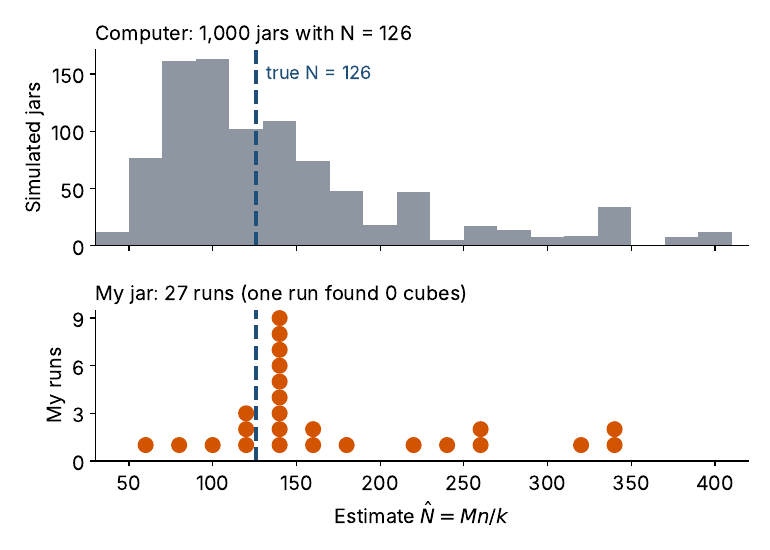

Chapter 5 My jar at home
I ran the activity 28 times with the real jar (\(N = 126\), \(M = 21\)) and recorded the pebbles and cubes inside the circle on each second toss. The data are in jar-runs.csv. A video of the tosses is at https://youtu.be/LEBHiUieLOI.
pebbles <- c(20, 6, 18, 16, 15, 12, 15, 18, 11, 21, 11, 16, 13, 17,
13, 23, 16, 12, 15, 14, 15, 16, 16, 24, 17, 18, 8, 17)
cubes <- c(2, 3, 3, 4, 1, 2, 3, 3, 2, 3, 1, 0, 2, 3,
3, 2, 3, 4, 3, 1, 1, 3, 3, 4, 3, 2, 1, 3)
n_home <- pebbles + cubes
N_home <- ifelse(cubes > 0, 21 * n_home / cubes, NA)
median(N_home, na.rm = TRUE) # 147
21 * sum(n_home) / sum(cubes) # pooled estimate, 155
sum(cubes) / sum(n_home) # 0.14, against 21/126 = 0.17 in the jar
median((21 + 1) * (n_home + 1) / (cubes + 1) - 1) # Chapman, 1155.1 What the real jar showed
The estimates ranged from 63 to 336, with a median of 147 and a pooled estimate of 155. One run found no cubes, so the Lincoln-Petersen estimator gave no answer for that run; the Chapman estimator still did, with a median of 115 across all 28 runs.
The estimates ran high. On average, 2.4 cubes landed in the circle, while the binomial expects about 3 given the observed values of \(n\). Cubes were 14% of the objects in the circle but 17% of the jar. The cubes were less likely than the pebbles to land in the circle, so \(k\) ran small and \(\hat N\) ran large. The “same \(p\)” condition failed in the real jar.

Figure 5.1: Top: 1,000 simulated jars that follow the binomial. Bottom: 27 home runs with at least one cube.
The gap is the lesson. The computer follows the binomial and centers near the truth (median 116). The real jar does not, because a lighter, flatter cube slides differently from a pebble. Ask students why the real estimates might run high before showing the answer.